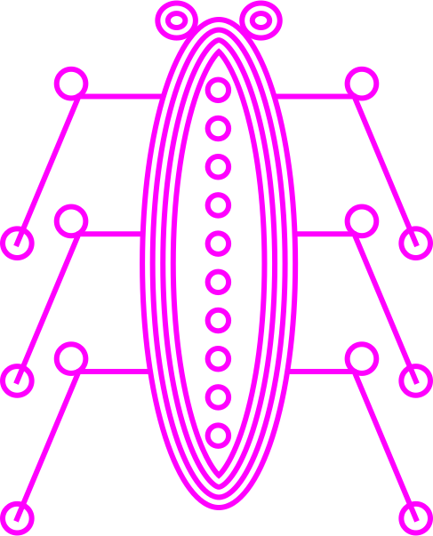
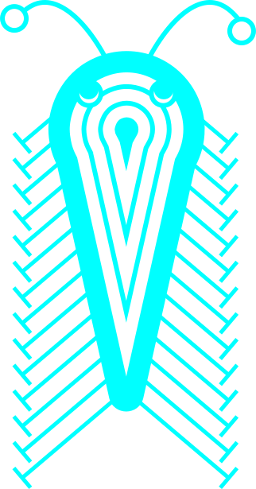
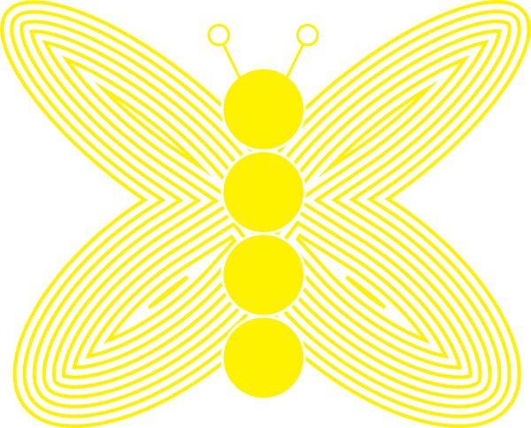
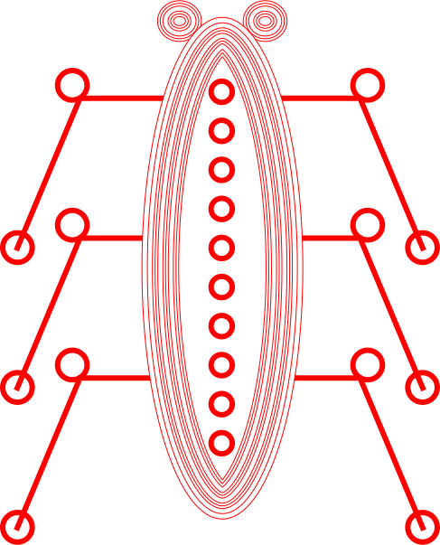
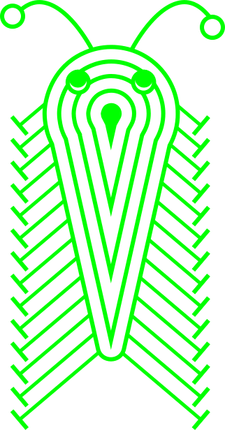
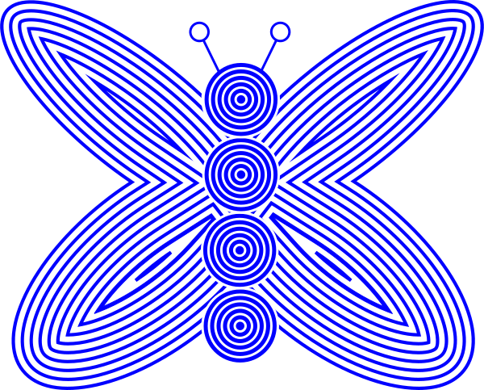

Rotate is measured in degrees. For forward rotation use positive numbers, for a reverse rotation use negative numbers. You can also rotate on a singular axis. Remember transform needs a trigger event like hover to work. so let's add a hover to bug 1 and make it move!
Scale can be applied to the entire element evenly or you can use two values, one for the height and one for the width. you can also use scaleX() and scaleY() for specificity.
This property skews an element along the X and Y axis, therefore you need 2 values measured in degrees.
This property moves an element from its current position along the X and Y axis, (think relative positioning). There fore you need two values here.
in order to have multiple transforms, they must be written inline. if you seperate on multiple lines, only the one on the bottom will work. Let's add a translate and scale to bugFive
Let's add a skew & rotate to bugSix
Okay, now we are getting the hand of it. Let's take a sneak peak at something called "transition-duration" and see how we can slow some of these movements down. First lets put a rotate on bugSeven of (900deg)
- well, it doesnt look like it spun around 900 degrees does it? so lets add this bit of code to our css page
.bugSeven {
transition-duration: 3s;
}
and see what happens